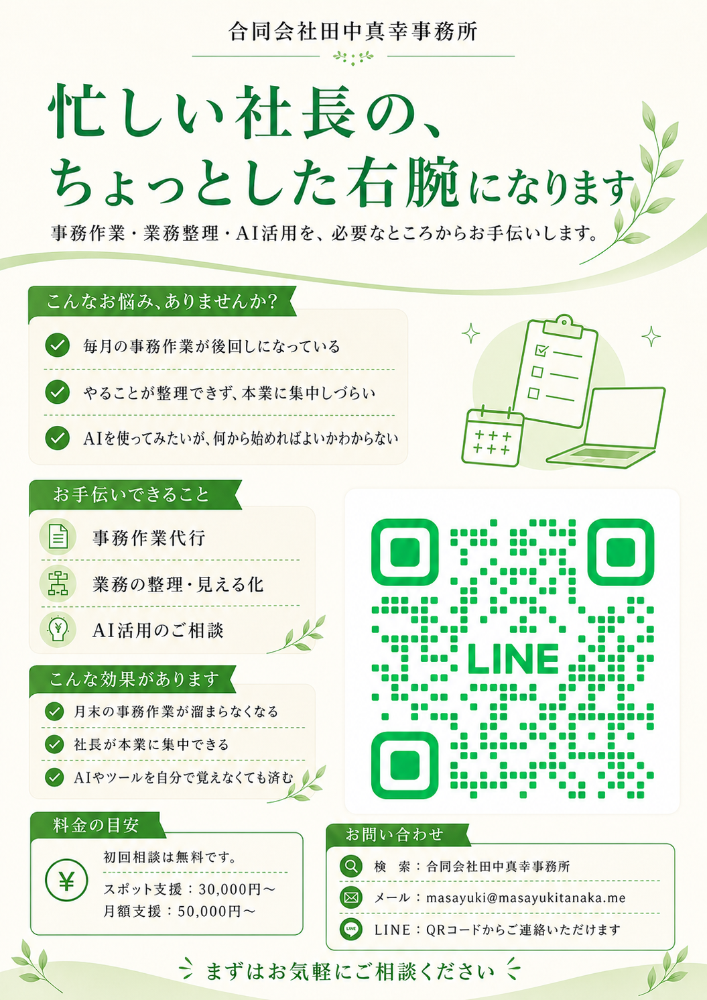

合同会社田中真幸事務所
忙しい社長の、
ちょっとした右腕になります
事務作業・業務整理・AI活用を、必要なところからお手伝いします。
チラシ画像は右側に配置しています。印刷用・共有用としても使いやすいよう、画像ファイルは images/ フォルダに分けています。

合同会社田中真幸事務所
事務作業・業務整理・AI活用を、必要なところからお手伝いします。
チラシ画像は右側に配置しています。印刷用・共有用としても使いやすいよう、画像ファイルは images/ フォルダに分けています。
